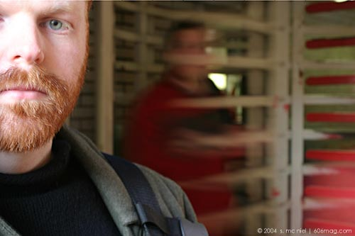

 |
Every morning on my commute to work, I push and squeeze to get on a train car. It's never comfortable, and yet, as I'm staring into the armpit of the guy next to me , an otherwise very intimate distance, there remains an unspoken rule of maintaining that silence. I'm amazed every morning at the inverse relationship of density of bodies to sound. All the individuals crushed into that train car have a story, and those stories are just the thing that Andy Sewell, audio and documentary artist, has extracted from the code of shut mouths. Five million people ride the train every month, yet it remains an untapped resource for interaction and social network. Andy points out that if conversations took place, it usually would be brief and ineffectual dialogue about the weather or a similar topic. “No one talks,” he says. “Why isn't there random or spontaneous conversation?” Andy set out to capture the very essence of Chicago: its people. For his project, Redline , he and a team of four other volunteer interviewers, Julie Shapiro, Jeff Sweeton, Bevin Ross and Sarah Huckabay set off to collect these stories. The conversations would start on the platforms and would continue until either a train arrived, or the interviewers would be invited to continue conversing on the train. The red line of the el is the one train route that spans the entire expanse of Chicago. “Demographically it is the perfect slice,” Sewell explains. “Every socioeconomic neighborhood is represented, from Englewood , to Lincoln Park to Rogers Park.” There are 35 stops on the red line, and it runs 24 hours. Andy points out “at one a.m. the train is still full,” so this was not a stealthy operation. People knew they were being interviewed and recorded by the presence of a large and obtrusive microphone . He would begin by asking some basic interview questions, and hopefully the dialogue would evolve and reveal those secondary stories. And that's the gold: Delving into some story that expounds on their experience. One inspiration for his project came from an episode of This American Life , “24 hours at the Golden Apple.” This American Life , based out of the Chicago radio station WBEZ, set up at the infamous family restaurant, and recorded all the stories and encounters that happened during that particular 24-hour period. Redline will be shown (heard, actually) in Las Manos Gallery opening April 23 in partnership with the Tangerine Arts Group, (insert link from 30 under 30) a group providing financial, directive and production support to artists. The space is set up to simulate the architecture of a train car, and people will be encouraged to sit randomly, next to strangers. Audience members will be challenged to experience the project in an audio-only format. The interviews will be streamed into a loose narrative with the only connection between people being their trip on the red line. There are stories, but there are no storylines. Some will be identifiable. Some will disclose harsh realities. Some will make you wonder who you are sitting next to the next time you ride the el. To hear more work from Andy Sewell, visit www.radiohodgepodge.net . |